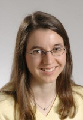
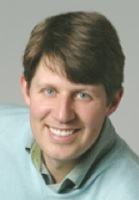
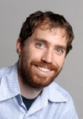

Fotini (Tina) Katopodes Chow
Professor
The research in my group focuses on numerical modeling of the atmospheric boundary layer, which we use to improve predictions for wind energy, air pollution dispersion, and cloud dynamics, among other applications. The analytical and computational methods that we develop help to quantify climate change mitigation strategies, air quality effects, and cloud representation and feedbacks in regional climate models. Current projects include studies of wind turbine interactions with boundary layer dynamics over steep terrain, urban dispersion modeling, improved numerical techniques for turbulence, representation of topography, and grid nesting, among others.
621
Davis Hall
(510) 643-4405
tinakc@berkeley.edu

Mark Stacey
Professor
Professor Stacey's research focuses on the fluid mechanics of estuaries and the coastal ocean, where tidal, freshwater and wind forcing interact with complex topography to define flows, transport and environmental conditions. Recent and current projects have addressed flow-induced connectivity within estuaries, mixing on the inner continental shelf, tidal dynamics and inundation associated with sea level rise, the impacts of nutrient discharge and management on the San Francisco Bay ecosystem, and the response of small estuaries on the California and Oregon coasts to regional forcing.
665
Davis Hall
(510) 642-6776
mstacey@berkeley.edu

Evan Variano
Associate Professor
Research is focused on experimental techniques, and the use of these to illuminate the dynamics of transport and mixing in natural water bodies. Sediment transport can be measured with digital video obtained via fiberoptic transmission. Transport of biologically relevant gasses CO2 and O2 can be measured with fluorescent dyes that signal the presence of such gasses in their dissolved (aqueous) phase. Dynamics at free surfaces can be measured remotely via digital infrared imagery. Each of these techniques, and others, are applied in the laboratory and, whenever possible, in the field. Laboratory devices are designed to provide models of phenomena that occur in field settings.
623
Davis Hall
(510) 642-2648
variano@ce.berkeley.edu